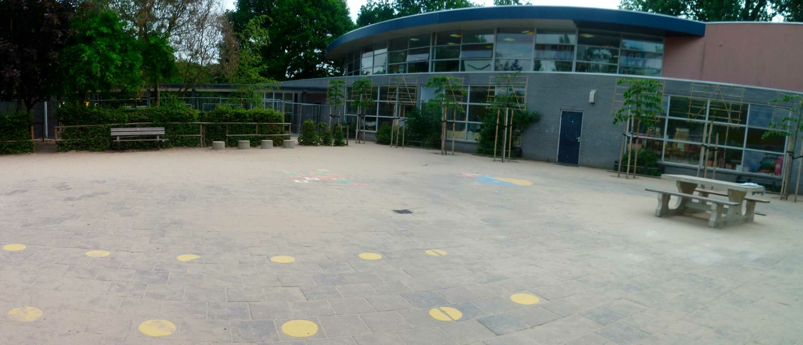
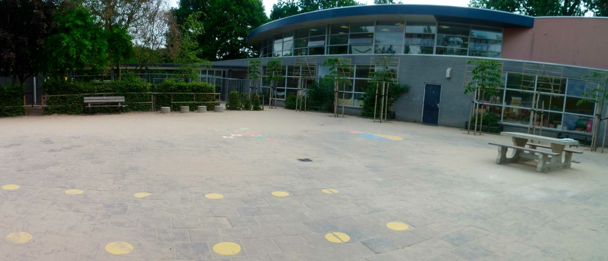
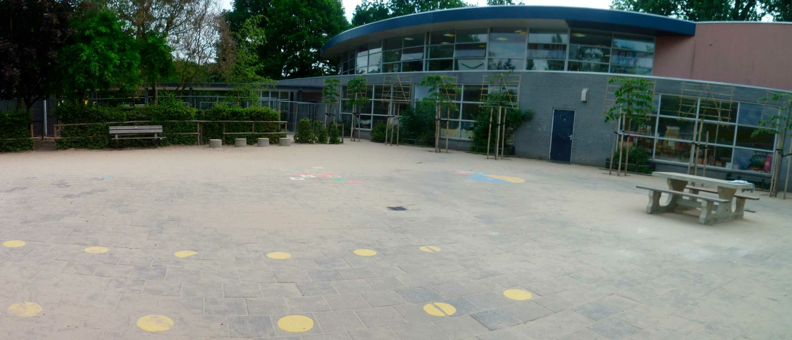
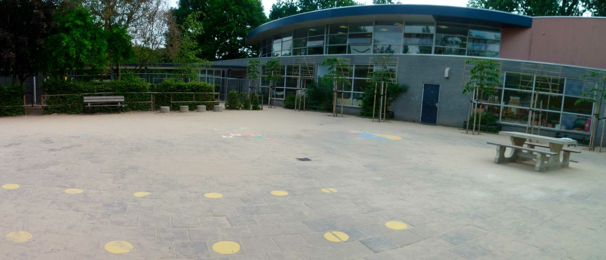
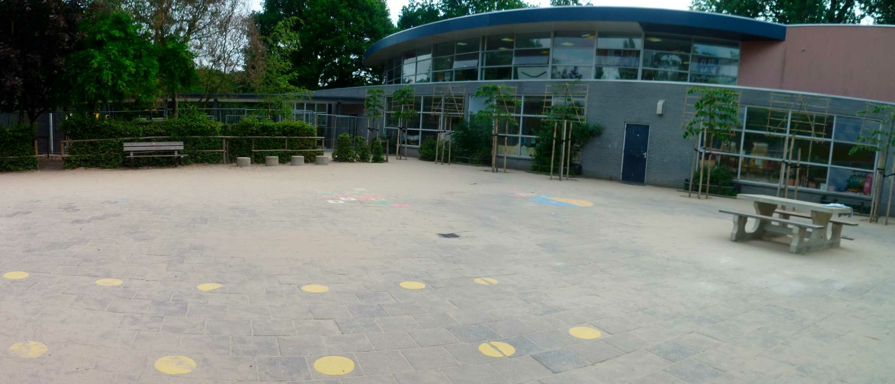

questionnaire
Home
Information
log In
Have you ever experienced anxious or panic-like feelings when entering open spaces, such as squares, parks, or large shopping centers?
Always
Sometimes
Never
Do you feel uncomfortable or anxious when leaving your home or a familiar environment?
Yes
No
Sometimes
Are there specific situations or circumstances in open spaces that you avoid due to feelings of anxiety?
Yes, very often
No, never
Sometimes
Do you experience physical symptoms such as palpitations, sweating, or breathing problems when you are in an open space?
Yes, I recognize all symptoms
I recognize only a few symptoms
No, I don't recognize any symptoms
Does it make a difference whether you are alone or accompanied by others in open spaces?
Yes
No
Do you have memories of traumatic events in open spaces that may increase your anxiety?
Yes
No
Yes, but the memories are vague
Have you ever experienced panicky feelings in situations where you think escape is impossible and no one could help?
Very often
Sometimes
Never
Do you often feel uncomfortable or anxious in crowded public places such as shopping malls, train stations, or busy streets?
Always
Never
Sometimes
Do you avoid certain situations or places due to fear of a panic attack or feeling of losing control?
Yes, very often
No, never
Sometimes
Does agoraphobia affect your daily activities, such as work, social interactions, or leisure activities?
Yes, it greatly affects my life
I struggle with it a lot but try to ignore it
No, it doesn't affect me
Have you ever avoided situations that you know are safe, but still feel anxious because of the environment?
Yes
No
Do you experience physical symptoms such as palpitations, trembling, or dizziness in situations that could trigger them?
Yes, very much
No, hardly
Yes, but very lightly
Finished
 

 
